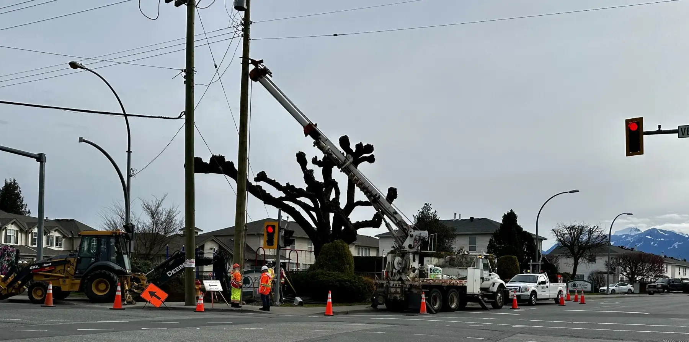

A useful cost discussion starts by defining what is being purchased. A low or high total means little when proposals include different planning, field, equipment, travel, documentation, or coordination obligations. Lower Mainland projects may also differ by authority, work window, access pressure, staging, and review needs. This checklist helps buyers expose those differences before comparing figures. It does not estimate prices or imply that one crew, vehicle, device package, or plan type fits every job. The aim is to create a written scope that qualified providers can assess consistently while leaving regulatory, authority, and site-specific decisions with the people entitled to make them.

Construction traffic control starts with the work sequence
For construction traffic control in Vancouver, describe the construction operation before requesting a crew quotation. Deliveries, equipment movement, temporary access changes, and the transition between work phases can create different demands even when the address stays the same. Provide the current sequence and identify which details are confirmed and which depend on another contractor. Ask how changes are communicated to the people responsible for the traffic plan and field implementation. A delayed concrete delivery, revised work area, or unexpected access conflict should not silently become an improvised roadside arrangement. The project needs a known route for reassessment and any required authority review.
Compare proposals against the same assumptions about hours, scope, approved documents, and responsibility for equipment and notifications. Avoid choosing solely by an hourly rate that excludes an essential interface. The goal is a clear agreement about delivery under the accepted plan, not a promise that traffic staff can solve every permission or construction-sequencing problem when they arrive.
Describe the demand before requesting a figure
Give each prospective provider the same project brief. Include the precise location and controlling road or facility authority; type of construction, utility, maintenance, road work, or event activity; proposed dates and hours; expected stages; affected travel modes; and known permit or plan status. Explain the work footprint, equipment movements, deliveries, worker access, and any need to preserve driveways, sidewalks, cycling routes, transit operations, or emergency access. Mark assumptions clearly when facts are not confirmed. Ask which information materially affects the proposal. Providers may need drawings, site photographs, an authority contact, construction schedule, event program, or accepted traffic-management documentation.
A walk-through may reveal interfaces that are invisible in a short email. Its purpose is discovery, not informal approval. Record who attended, what was observed, and which questions still require an authority, engineer, supervisor, owner, or other responsible party. Separate the base request from alternatives. For example, identify whether the buyer wants planning support, field implementation, lane-closure support, event access coordination, or several distinct phases. Avoid asking for an undefined all-inclusive service. When contingencies are plausible, request a stated method for handling them rather than an invented universal allowance. This creates a comparable decision record and reduces the chance that essential tasks appear only after mobilization.
Check what every proposal includes and excludes
Review labour by role and responsibility rather than head count alone. Ask what supervision, briefing, communication, inspection, and documentation functions are included; how minimum call-outs or shift extensions are treated; and which party coordinates with the project team. Staffing must arise from applicable requirements and the accepted site approach, not from a generic purchasing checklist. If credentials matter, ask how current worker-level evidence will be confirmed before assignment. Examine planning and administrative boundaries. Determine whether a proposal covers information gathering, site review, drafting, professional input where required, authority submissions, revisions, implementation scheduling, and version distribution.
Do not assume that a document fee includes approval, or that a contractor can promise an authority’s decision. Note who pays for additional review cycles and what constitutes a client-driven change versus correction of the provider’s own work. For equipment and logistics, ask what is supplied, transported, installed, inspected, adjusted, removed, and documented. Clarify storage, damaged or missing items, after-hours movements, standby, travel, and special access. The point is not to prescribe devices; it is to locate commercial boundaries. Taxes, invoicing intervals, cancellation terms, weather delays, escalation procedures, and post-shift records also belong in the comparison.
Every qualification or exclusion should be visible beside the price it affects.
Compare uncertainty, change control, and evidence
Create a comparison sheet with columns for confirmed scope, assumptions, exclusions, dependencies, unit or pricing basis, and responsible party. Normalize only genuinely equivalent items. If one provider identifies a missing authority decision while another simply omits it, do not treat silence as a lower cost. Ask both bidders to respond to the same clarification and retain their written answers. A responsible qualification can be more informative than an attractive unsupported total. Test predictable change scenarios. What happens if the work window moves, a second stage is added, an access route cannot be used, review comments require revision, or the shift runs longer than expected?
Ask who must authorize additional work, how notice is given, which rates or formulas apply, and what records accompany the change. These questions help manage commercial exposure without pretending that every field development can be priced in advance. Finally, consider capability evidence relevant to the actual scope. Suitable material may include the provider’s process for assigning trained people, controlling current documents, conducting briefings, reporting changing conditions, and retaining project records. WorkSafeBC publishes traffic-control requirements and training information, while BCCSA describes its Traffic Control Person program. Those sources can inform questions, but they do not select a provider for the buyer.
Document the final choice against scope fit, responsibilities, uncertainty management, and verifiable evidence—not price alone.
Questions this guide answers
Why is a total price insufficient for comparison?
Totals may cover different labour roles, planning steps, equipment, travel, records, assumptions, and change conditions. Scope must be normalized before figures are meaningfully compared.
Should a proposal guarantee permit approval?
No. A provider can describe submission or revision support, but the applicable authority controls its own review and decision.
What should buyers do with proposal exclusions?
Place each exclusion beside the related price, identify the responsible party, and ask all bidders the same clarification where it affects comparison.